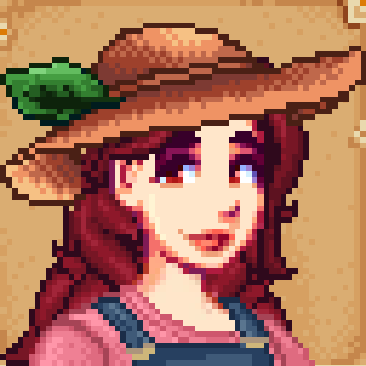

Durante minhas jogatinas de stardew, me desconecto da realidade,
consigo relaxar
com as músicas
e me sentir em paz comigo mesma. Apesar do jogo ter muitos objetivos e afazeres, tirar minha
cabeça de
problemas reais e poder
viver uma realidade diferente me traz um certo conforto, poder descansar a mente e me
divertir. Muitas
vezes posso jogar com meus amigos, o que torna tudo ainda melhor,
a companhia de amigos de verdade, com um jogo que tanto amo, faz toda a diferença.